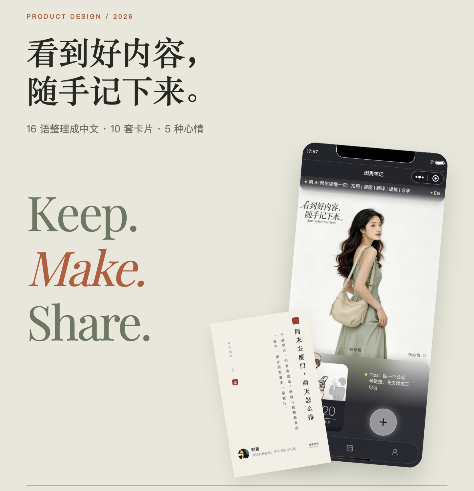
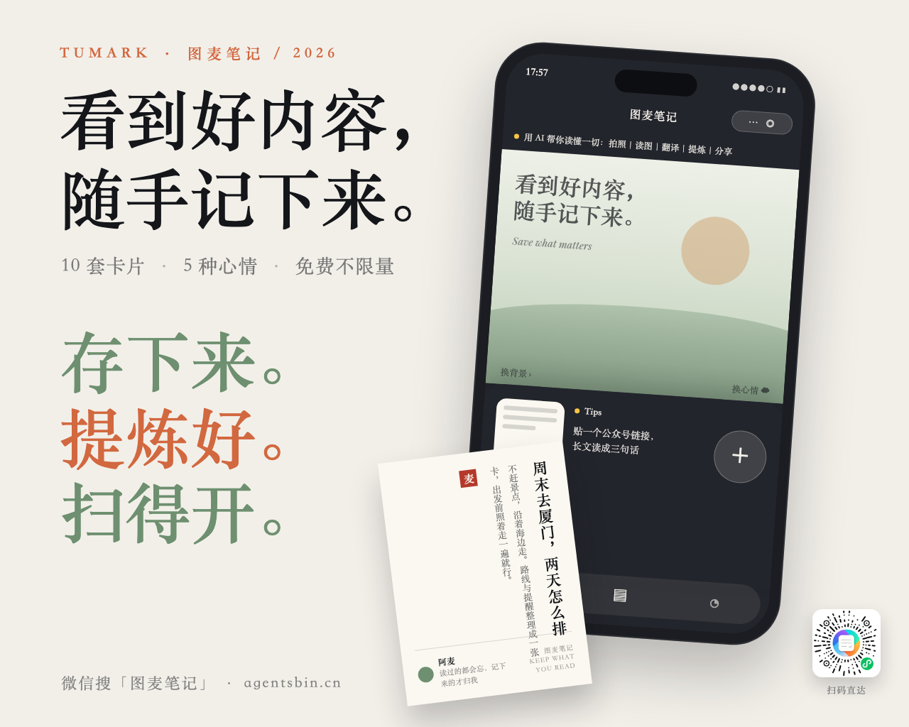
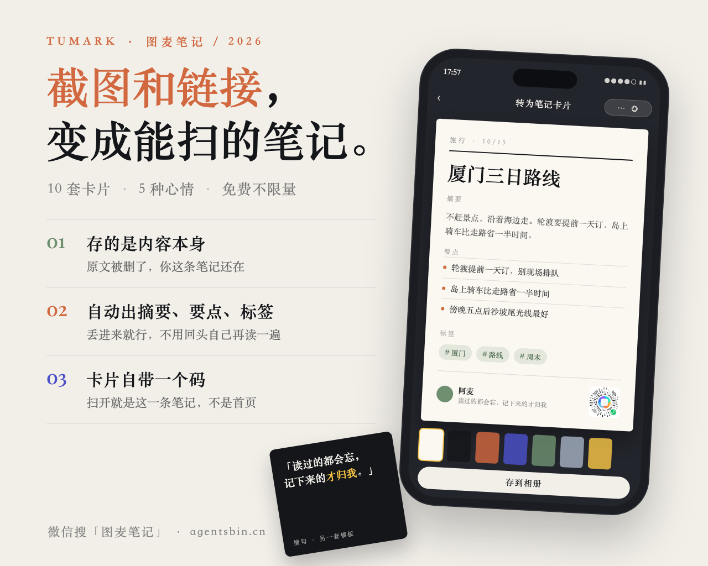
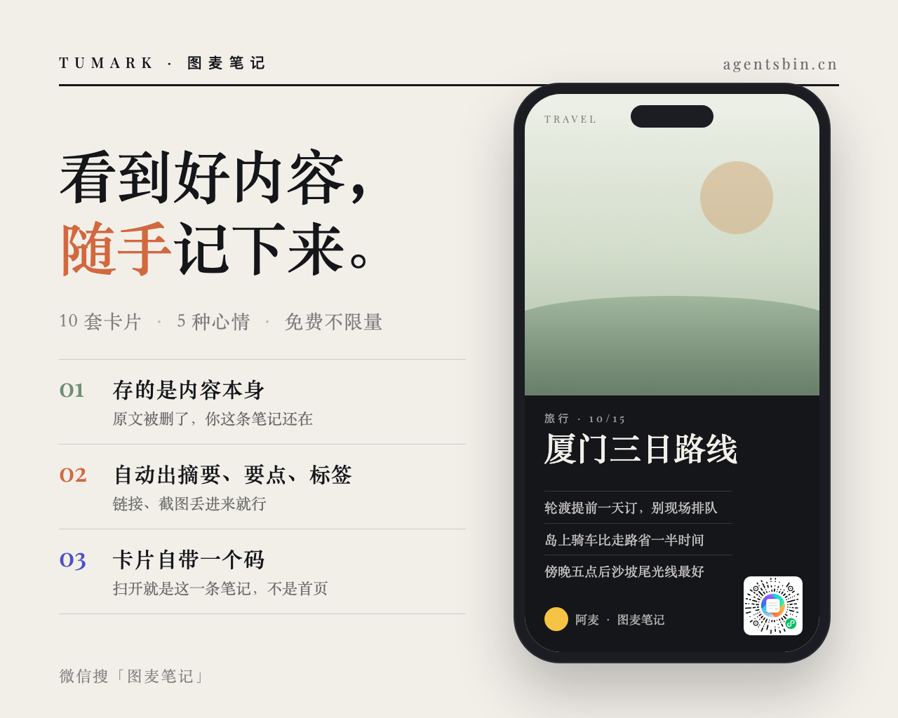

参照 · 站长给的那张
比赛作品集 V7 封面
照它这套排布搬：左上小字 kicker → 两行宋体大字 → 一行三项副题 → 左下三行展示字 → 右侧一只顺时针微倾的手机壳 → 壳的左下角压一张逆时针微倾的竖排纸卡。两处不照抄：那行「16 语整理成中文」我们没实测读数，不写；壳里那张是真模拟器截图＋真人照片，一律改成 CSS 画、不放真人。

甲 · 最贴参照
大字与压角纸卡
排布与参照一一对上。壳里放现在的首屏（深色玻璃面板、Tips、圆 ➕、底栏），左下压一张「素宣信笺」竖排纸卡，右下角一枚现网真码。左下三行展示字改成我们的三条差异化：存下来。／提炼好。／扫得开。

乙 · 最讲道理
差异化三条与成品卡
大字换成「截图和链接，变成能扫的笔记。」，左半 01／02／03 三条写清竞品没有的三件事；壳里放一张成品卡片（「玉版宣」：摘要＋要点＋标签＋带码署名）＋模板小图那一排＋「存到相册」。哪条卖点都能在这张图上直接指着看见。

丙 · 改动最小
现役定稿只换内文
骨架一处不动（报头＋3px 墨线＋宋体大字＋编号三条＋右半手机壳套「杂志封面」＋真码），只换三样：大字换成场景钩子、三条内文换成差异化三条、副题那行补上「5 种心情」。照片位上那张真人图撤了——肖像权从没确认过，换成 CSS 画的浅面。
